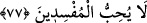

Dünya malı ile sevinmenin yasaklanması, Allah’ın sevgisine engel olduğu içindir. Bu
illet ve sebebe binâen âyetin devamında buyrulur ki: “Bil ki Allah şımarıkları” yâni
dünya süsleriyle şımaranları “sevmez.” Zira, Allah katında dünya sevimsizdir.
Aşağılık dünya nedir? Âdeta bir zulüm sarayı
Her adımda binlerce kişiyi öldürüp atmış
Elverse, dilenciyi sevindirmez
Kaybedilecek olsa da üzülmeye değmez
Sevinen kimse ancak Allah’a kulluk ve ubûdiyeti yerine getirmesi ve âhiret saâdetini
taleb etmesi sebebiyle sevinmelidir.
77. Allah’ın sana verdiğinden (O’nun yolunda harcayarak) âhiret yurdunu iste;
ama dünyadan da nasibini unutma. Allah sana ihsan ettiği gibi, sen de (Allah’ın
kullarına) iyilik et. Yeryüzünde bozgunculuğu arzulama. Şüphesiz ki Allah,
bozguncuları sevmez.
“Allah’ın sana verdiğinden” yâni zenginlikten (O’nun yolunda harcayarak) âhiret
yurdunu iste;” onu kazanmağa çalış.
Allah Teâlâ burada “ değil de “
değil de “ buyurdu; çünkü o, senin malını
buyurdu; çünkü o, senin malını
kasdetmedi; bilakis mülkiyet hâlini, mal, deve ve sığır gibi hayvanlara mâlik olma
durumunu kasdetmiştir. Nitekim Keşfü’l-esrâr’da bu şekilde kaydedilmiştir.
“Âhiret yurdu” ile kasdedilen, Allah’ın sevâbıdır. Fakirleri gözetmek, sılâ-i rahim
yapmak, esiri serbest bırakmak ve benzeri hayır işlerinde malı harcayıp ecir ve
sevabını Allah’tan beklemektir.
Sâ’dî der ki:
A benim canım, âhireti dünya karşılığı olarak
Alabilirken al; yoksa pişman olursun
“Ama dünyadan da nasibini unutma.” Onu da tamamen terketme.
el-Müfredât’ta der ki: “ (unutma)”, kişinin, kendisine emânet edilen şeyleri
muhâfaza etmeyi terketmesidir. Bu da ya kalbinin za’fından veya gafletinden ya da
kasıtlı olarak terketmesinden kaynaklanır ve sonunda o şey, kalbten tamamen silinip yok